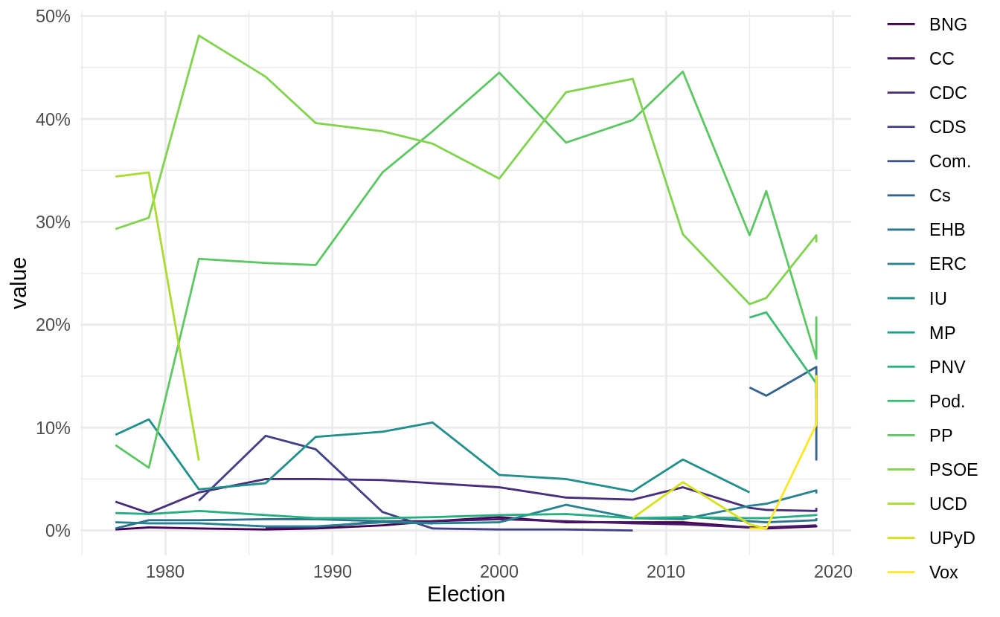
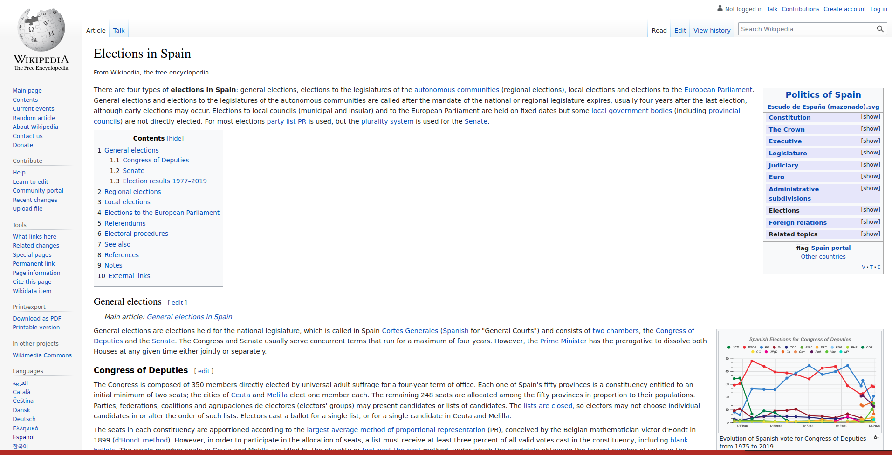
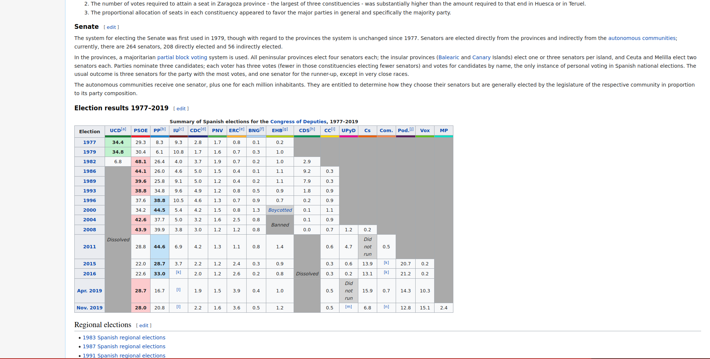
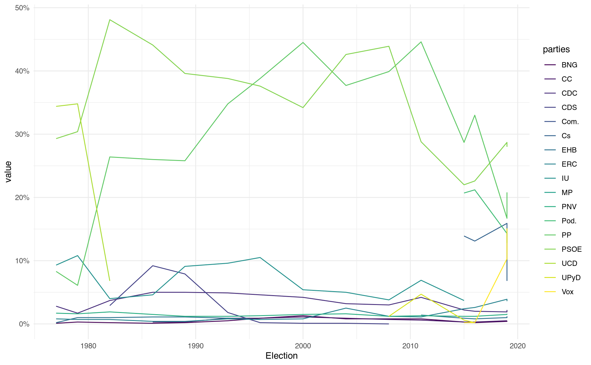

[1] "/home/thomas/.cache/R/renv/cache/v5/linux-endeavouros-2025.03.19/R-4.6/x86_64-pc-linux-gnu/scrapex/0.0.1.9999/9aa78cbb3eccaaa811756b4bf07fdd1a/scrapex/extdata/history_elections_spain//Elections_Spain.html"
Skip the usual ‘basics’ right into coding
Webscraping is the subtle art of being a ninja
The plot above shows the election results for all political parties in Spain since 1978, all completely scraped from Wikipedia.
Chapter 2 of the book
Webscraping tutorials are doomed to change
API examples are doomed to change
Predictability is important
scrapex is an R package with completely self-standing web scraping/API examples for eternity
[1] "/home/thomas/.cache/R/renv/cache/v5/linux-endeavouros-2025.03.19/R-4.6/x86_64-pc-linux-gnu/scrapex/0.0.1.9999/9aa78cbb3eccaaa811756b4bf07fdd1a/scrapex/extdata/history_elections_spain//Elections_Spain.html"
Ethical web scraping: identifying yourself
Where can you find it?
{html_document}
<html class="client-nojs" lang="en" dir="ltr">
[1] <head>\n<meta charset="UTF-8">\n<title>Elections in Spain - Wikipedia</ti ...
[2] <body class="mediawiki ltr sitedir-ltr mw-hide-empty-elt ns-0 ns-subject ...Difficult to read – raw HTML code
Often too long to actually explore it
This output is mostly to confirm it was read and the header of the HTML file
What we actually want:

The output from read_html() is difficult to understand
The goal is to find the actual election data on the website
The rvest package has the html_table() function that can extract tables from a website and import them into R.
Grabs all tables
We only pick the one we’re interested in.
# A tibble: 16 × 18
Election `UCD[a]` PSOE `PP[b]` `IU[c]` `CDC[d]` PNV `ERC[e]` `BNG[f]`
<chr> <chr> <dbl> <dbl> <chr> <dbl> <dbl> <dbl> <dbl>
1 Election "" NA NA "" NA NA NA NA
2 1977 "34.4" 29.3 8.3 "9.3" 2.8 1.7 0.8 0.1
3 1979 "34.8" 30.4 6.1 "10.8" 1.7 1.6 0.7 0.3
4 1982 "6.8" 48.1 26.4 "4.0" 3.7 1.9 0.7 0.2
5 1986 "Dissolved" 44.1 26 "4.6" 5 1.5 0.4 0.1
6 1989 "Dissolved" 39.6 25.8 "9.1" 5 1.2 0.4 0.2
7 1993 "Dissolved" 38.8 34.8 "9.6" 4.9 1.2 0.8 0.5
8 1996 "Dissolved" 37.6 38.8 "10.5" 4.6 1.3 0.7 0.9
9 2000 "Dissolved" 34.2 44.5 "5.4" 4.2 1.5 0.8 1.3
10 2004 "Dissolved" 42.6 37.7 "5.0" 3.2 1.6 2.5 0.8
11 2008 "Dissolved" 43.9 39.9 "3.8" 3 1.2 1.2 0.8
12 2011 "Dissolved" 28.8 44.6 "6.9" 4.2 1.3 1.1 0.8
13 2015 "Dissolved" 22 28.7 "3.7" 2.2 1.2 2.4 0.3
14 2016 "Dissolved" 22.6 33 "[k]" 2 1.2 2.6 0.2
15 Apr. 2019 "Dissolved" 28.7 16.7 "[l]" 1.9 1.5 3.9 0.4
16 Nov. 2019 "Dissolved" 28 20.8 "[l]" 2.2 1.6 3.6 0.5
# ℹ 9 more variables: `EHB[g]` <chr>, `CDS[h]` <chr>, `CC[i]` <dbl>,
# UPyD <chr>, Cs <chr>, Com. <chr>, `Pod.[j]` <dbl>, Vox <dbl>, MP <dbl>The process of web scraping requires knowledge of regular expressions and data cleaning techniques.
# A tibble: 16 × 8
Election `UCD[a]` `IU[c]` `EHB[g]` `CDS[h]` UPyD Cs Com.
<chr> <chr> <chr> <chr> <chr> <chr> <chr> <chr>
1 Election "" "" "" "" "" "" ""
2 1977 "34.4" "9.3" "0.2" "" "" "" ""
3 1979 "34.8" "10.8" "1.0" "" "" "" ""
4 1982 "6.8" "4.0" "1.0" "2.9" "" "" ""
5 1986 "Dissolved" "4.6" "1.1" "9.2" "" "" ""
6 1989 "Dissolved" "9.1" "1.1" "7.9" "" "" ""
7 1993 "Dissolved" "9.6" "0.9" "1.8" "" "" ""
8 1996 "Dissolved" "10.5" "0.7" "0.2" "" "" ""
9 2000 "Dissolved" "5.4" "Boycotted" "0.1" "" "" ""
10 2004 "Dissolved" "5.0" "Banned" "0.1" "" "" ""
11 2008 "Dissolved" "3.8" "Banned" "0.0" "1.2" "0.2" ""
12 2011 "Dissolved" "6.9" "1.4" "Dissolved" "4.7" "Did… "0.5"
13 2015 "Dissolved" "3.7" "0.9" "Dissolved" "0.6" "13.… "[k]"
14 2016 "Dissolved" "[k]" "0.8" "Dissolved" "0.2" "13.… "[k]"
15 Apr. 2019 "Dissolved" "[l]" "1.0" "Dissolved" "Did not r… "15.… "0.7"
16 Nov. 2019 "Dissolved" "[l]" "1.2" "Dissolved" "[m]" "6.8" "[n]"str_replace_all# A tibble: 16 × 8
Election `UCD[a]` `IU[c]` `EHB[g]` `CDS[h]` UPyD Cs Com.
<chr> <chr> <chr> <chr> <chr> <chr> <chr> <chr>
1 <NA> "" "" "" "" "" "" ""
2 1977 "34.4" "9.3" "0.2" "" "" "" ""
3 1979 "34.8" "10.8" "1.0" "" "" "" ""
4 1982 "6.8" "4.0" "1.0" "2.9" "" "" ""
5 1986 <NA> "4.6" "1.1" "9.2" "" "" ""
6 1989 <NA> "9.1" "1.1" "7.9" "" "" ""
7 1993 <NA> "9.6" "0.9" "1.8" "" "" ""
8 1996 <NA> "10.5" "0.7" "0.2" "" "" ""
9 2000 <NA> "5.4" <NA> "0.1" "" "" ""
10 2004 <NA> "5.0" <NA> "0.1" "" "" ""
11 2008 <NA> "3.8" <NA> "0.0" "1.2" "0.2" ""
12 2011 <NA> "6.9" "1.4" <NA> "4.7" <NA> "0.5"
13 2015 <NA> "3.7" "0.9" <NA> "0.6" "13.9" <NA>
14 2016 <NA> <NA> "0.8" <NA> "0.2" "13.1" <NA>
15 Apr. 2019 <NA> <NA> "1.0" <NA> <NA> "15.9" "0.7"
16 Nov. 2019 <NA> <NA> "1.2" <NA> <NA> "6.8" <NA>Replace extra patterns of months
We replace again here because we want to replace with "" instead of NA
# A tibble: 16 × 8
Election `UCD[a]` `IU[c]` `EHB[g]` `CDS[h]` UPyD Cs Com.
<chr> <chr> <chr> <chr> <chr> <chr> <chr> <chr>
1 <NA> "" "" "" "" "" "" ""
2 1977 "34.4" "9.3" "0.2" "" "" "" ""
3 1979 "34.8" "10.8" "1.0" "" "" "" ""
4 1982 "6.8" "4.0" "1.0" "2.9" "" "" ""
5 1986 <NA> "4.6" "1.1" "9.2" "" "" ""
6 1989 <NA> "9.1" "1.1" "7.9" "" "" ""
7 1993 <NA> "9.6" "0.9" "1.8" "" "" ""
8 1996 <NA> "10.5" "0.7" "0.2" "" "" ""
9 2000 <NA> "5.4" <NA> "0.1" "" "" ""
10 2004 <NA> "5.0" <NA> "0.1" "" "" ""
11 2008 <NA> "3.8" <NA> "0.0" "1.2" "0.2" ""
12 2011 <NA> "6.9" "1.4" <NA> "4.7" <NA> "0.5"
13 2015 <NA> "3.7" "0.9" <NA> "0.6" "13.9" <NA>
14 2016 <NA> <NA> "0.8" <NA> "0.2" "13.1" <NA>
15 2019 <NA> <NA> "1.0" <NA> <NA> "15.9" "0.7"
16 2019 <NA> <NA> "1.2" <NA> <NA> "6.8" <NA># A tibble: 15 × 18
Election `UCD[a]` PSOE `PP[b]` `IU[c]` `CDC[d]` PNV `ERC[e]` `BNG[f]`
<dbl> <dbl> <dbl> <dbl> <dbl> <dbl> <dbl> <dbl> <dbl>
1 1977 34.4 29.3 8.3 9.3 2.8 1.7 0.8 0.1
2 1979 34.8 30.4 6.1 10.8 1.7 1.6 0.7 0.3
3 1982 6.8 48.1 26.4 4 3.7 1.9 0.7 0.2
4 1986 NA 44.1 26 4.6 5 1.5 0.4 0.1
5 1989 NA 39.6 25.8 9.1 5 1.2 0.4 0.2
6 1993 NA 38.8 34.8 9.6 4.9 1.2 0.8 0.5
7 1996 NA 37.6 38.8 10.5 4.6 1.3 0.7 0.9
8 2000 NA 34.2 44.5 5.4 4.2 1.5 0.8 1.3
9 2004 NA 42.6 37.7 5 3.2 1.6 2.5 0.8
10 2008 NA 43.9 39.9 3.8 3 1.2 1.2 0.8
11 2011 NA 28.8 44.6 6.9 4.2 1.3 1.1 0.8
12 2015 NA 22 28.7 3.7 2.2 1.2 2.4 0.3
13 2016 NA 22.6 33 NA 2 1.2 2.6 0.2
14 2019 NA 28.7 16.7 NA 1.9 1.5 3.9 0.4
15 2019 NA 28 20.8 NA 2.2 1.6 3.6 0.5
# ℹ 9 more variables: `EHB[g]` <dbl>, `CDS[h]` <dbl>, `CC[i]` <dbl>,
# UPyD <dbl>, Cs <dbl>, Com. <dbl>, `Pod.[j]` <dbl>, Vox <dbl>, MP <dbl># A tibble: 15 × 18
Election UCD PSOE PP IU CDC PNV ERC BNG EHB CDS CC
<dbl> <dbl> <dbl> <dbl> <dbl> <dbl> <dbl> <dbl> <dbl> <dbl> <dbl> <dbl>
1 1977 34.4 29.3 8.3 9.3 2.8 1.7 0.8 0.1 0.2 NA NA
2 1979 34.8 30.4 6.1 10.8 1.7 1.6 0.7 0.3 1 NA NA
3 1982 6.8 48.1 26.4 4 3.7 1.9 0.7 0.2 1 2.9 NA
4 1986 NA 44.1 26 4.6 5 1.5 0.4 0.1 1.1 9.2 0.3
5 1989 NA 39.6 25.8 9.1 5 1.2 0.4 0.2 1.1 7.9 0.3
6 1993 NA 38.8 34.8 9.6 4.9 1.2 0.8 0.5 0.9 1.8 0.9
7 1996 NA 37.6 38.8 10.5 4.6 1.3 0.7 0.9 0.7 0.2 0.9
8 2000 NA 34.2 44.5 5.4 4.2 1.5 0.8 1.3 NA 0.1 1.1
9 2004 NA 42.6 37.7 5 3.2 1.6 2.5 0.8 NA 0.1 0.9
10 2008 NA 43.9 39.9 3.8 3 1.2 1.2 0.8 NA 0 0.7
11 2011 NA 28.8 44.6 6.9 4.2 1.3 1.1 0.8 1.4 NA 0.6
12 2015 NA 22 28.7 3.7 2.2 1.2 2.4 0.3 0.9 NA 0.3
13 2016 NA 22.6 33 NA 2 1.2 2.6 0.2 0.8 NA 0.3
14 2019 NA 28.7 16.7 NA 1.9 1.5 3.9 0.4 1 NA 0.5
15 2019 NA 28 20.8 NA 2.2 1.6 3.6 0.5 1.2 NA 0.5
# ℹ 6 more variables: UPyD <dbl>, Cs <dbl>, Com. <dbl>, Pod. <dbl>, Vox <dbl>,
# MP <dbl># Pivot from wide to long to plot it in ggplot
cleaned_data <-
semi_cleaned_data %>%
pivot_longer(-Election, names_to = "parties")
# Plot it
cleaned_data %>%
ggplot(aes(Election, value, color = parties)) +
geom_line() +
scale_y_continuous(labels = function(x) paste0(x, "%")) +
scale_color_viridis_d() +
theme_minimal()